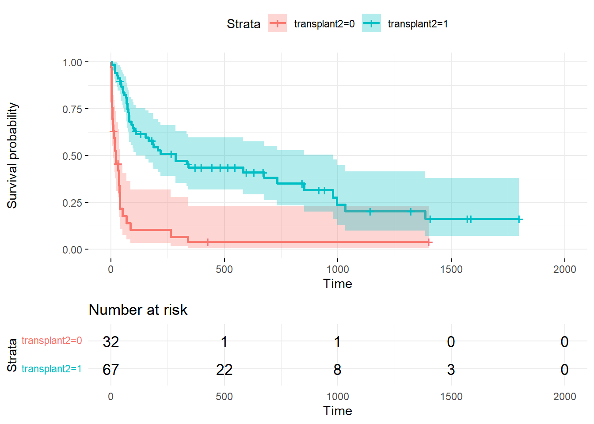

#loading the needed libraries
library(survival)
library(survminer)Results and Discussion
#import dataset
heart_transplant <- read.csv("heart_transplant.csv")#examine the dataset
summary(heart_transplant) id acceptyear age survived
Min. : 1.00 Min. :67.00 Min. : 8.0 Length:99
1st Qu.: 26.50 1st Qu.:69.00 1st Qu.:40.5 Class :character
Median : 51.00 Median :71.00 Median :47.0 Mode :character
Mean : 52.26 Mean :70.64 Mean :44.6
3rd Qu.: 78.50 3rd Qu.:72.00 3rd Qu.:52.0
Max. :103.00 Max. :74.00 Max. :64.0
survtime prior transplant wait
Min. : 1.0 Length:99 Length:99 Min. : 1
1st Qu.: 31.5 Class :character Class :character 1st Qu.: 9
Median : 85.0 Mode :character Mode :character Median : 26
Mean : 316.4 Mean : 39
3rd Qu.: 436.0 3rd Qu.: 46
Max. :1799.0 Max. :310
NA's :32 Results
Let’s look at the data, Image 1 best illustrates this answer. The rate of death with no heart transplant drops significantly over time. The number of patients who did not receive a transplant is 32, with only 2 surviving past 500 days. Patients who did receive the transplant are 67, with more than 22 surviving past 500 days.
Image 1

In Image 2 categories patients under 40, between 40-50 and over 50 years old and a hazard ratio of 2.08. From one category to the next this tells us you are twice as likely to die. Not accounting for if you get the transplant or not.
Image 2
Call:
coxph(formula = Surv(survtime, survived2) ~ age2 + prior2 + strata(transplant2))
n= 99, number of events= 71
coef exp(coef) se(coef) z Pr(>|z|)
age2 0.7337 2.0828 0.1808 4.059 4.93e-05 ***
prior2 -0.7177 0.4879 0.4451 -1.613 0.107
---
Signif. codes: 0 '***' 0.001 '**' 0.01 '*' 0.05 '.' 0.1 ' ' 1
exp(coef) exp(-coef) lower .95 upper .95
age2 2.0828 0.4801 1.4614 2.968
prior2 0.4879 2.0497 0.2039 1.167
Concordance= 0.634 (se = 0.041 )
Likelihood ratio test= 20.9 on 2 df, p=3e-05
Wald test = 20.01 on 2 df, p=5e-05
Score (logrank) test = 21.14 on 2 df, p=3e-05First model excluded wait time as wait time is only available for patients who received transplant, and not all patients in the study had the opportunity to receive a heart transplant. The C-statistic =0.747 (see Table 1).
Call:
coxph(formula = Surv(survtime, survived2) ~ acceptyear + age +
prior2 + transplant2)
n= 99, number of events= 71
coef exp(coef) se(coef) z Pr(>|z|)
acceptyear -0.08294 0.92040 0.06647 -1.248 0.212083
age 0.05553 1.05711 0.01432 3.878 0.000105 ***
prior2 -0.63345 0.53076 0.44818 -1.413 0.157542
transplant2 -1.69836 0.18298 0.28791 -5.899 3.66e-09 ***
---
Signif. codes: 0 '***' 0.001 '**' 0.01 '*' 0.05 '.' 0.1 ' ' 1
exp(coef) exp(-coef) lower .95 upper .95
acceptyear 0.9204 1.086 0.8080 1.0485
age 1.0571 0.946 1.0278 1.0872
prior2 0.5308 1.884 0.2205 1.2776
transplant2 0.1830 5.465 0.1041 0.3217
Concordance= 0.756 (se = 0.031 )
Likelihood ratio test= 48.89 on 4 df, p=6e-10
Wald test = 49.36 on 4 df, p=5e-10
Score (logrank) test = 55.91 on 4 df, p=2e-11Second model generated included wait time to see if wait time is significant, only looking at records that received the transplant, not the control who did not receive transplant. The result C-statistic =0.683 (see Table 2).
Call:
coxph(formula = Surv(survtime, survived2) ~ acceptyear + age +
prior2 + wait)
n= 67, number of events= 43
(32 observations deleted due to missingness)
coef exp(coef) se(coef) z Pr(>|z|)
acceptyear 0.005578 1.005594 0.095776 0.058 0.9536
age 0.050544 1.051843 0.021308 2.372 0.0177 *
prior2 -0.751733 0.471549 0.453454 -1.658 0.0974 .
wait -0.008337 0.991697 0.005109 -1.632 0.1027
---
Signif. codes: 0 '***' 0.001 '**' 0.01 '*' 0.05 '.' 0.1 ' ' 1
exp(coef) exp(-coef) lower .95 upper .95
acceptyear 1.0056 0.9944 0.8335 1.213
age 1.0518 0.9507 1.0088 1.097
prior2 0.4715 2.1207 0.1939 1.147
wait 0.9917 1.0084 0.9818 1.002
Concordance= 0.685 (se = 0.043 )
Likelihood ratio test= 14.23 on 4 df, p=0.007
Wald test = 12.64 on 4 df, p=0.01
Score (logrank) test = 13.19 on 4 df, p=0.01Third model without an accepted year was generated and then compared using an ANOVA table (see Table 4). The p-value = 0.1656 which is greater than 0.05 and we can drop the accepted year as a variable.
Call:
coxph(formula = Surv(survtime, survived2) ~ age + prior2 + transplant2)
n= 99, number of events= 71
coef exp(coef) se(coef) z Pr(>|z|)
age 0.05647 1.05810 0.01457 3.875 0.000107 ***
prior2 -0.70778 0.49274 0.44368 -1.595 0.110655
transplant2 -1.72587 0.17802 0.28398 -6.077 1.22e-09 ***
---
Signif. codes: 0 '***' 0.001 '**' 0.01 '*' 0.05 '.' 0.1 ' ' 1
exp(coef) exp(-coef) lower .95 upper .95
age 1.0581 0.9451 1.0283 1.0888
prior2 0.4927 2.0295 0.2065 1.1756
transplant2 0.1780 5.6174 0.1020 0.3106
Concordance= 0.746 (se = 0.031 )
Likelihood ratio test= 47.31 on 3 df, p=3e-10
Wald test = 48.37 on 3 df, p=2e-10
Score (logrank) test = 55.28 on 3 df, p=6e-12The C-statistic for the model without an accepted year is equal to 0.739 (see Table 3). Which shows that this model has a higher predictability capabilities compared to the model including the accepted year with a C-statistic = 0.683.
Discussion
The key question at the heart of our study revolves around a fundamental question healthcare: does a heart transplant prolong the life of patients? Logically, one would assume that undergoing such a significant medical procedure, with all the risk involved and complexities, should lead to an extended life of the individual. After all, why would patients willingly choose to undergo heart transplants if they did not anticipate the promise of improved survival and a better quality of life? To address this key question, we delved into the data provided by Stanford Heart Transplant Study, utilizing the Cox Regression model to shed light on the matter.
Our analysis, as portrayed in Image 1, provides a compelling answer to the question. In this graph, patients who received a heart transplant are represented in teal, while those who did not receive a transplant are represented in red. The important observation is the remarkable decrease in the rate of death among those who did not undergo a heart transplant over time. The total sample size was 99 patients, 32 of them did not receive a transplant while 67 others did receive the heart transplant. From the 32 who did not receive a transplant only 2 patients managed to survive past 500 days. In stark contrast, among the 67 patients who did receive the transplant, more than 22 of them survived beyond the 500-day mark. This visually striking contrast suggests that heart transplantation does indeed have a significant impact on extending the lives of patients in this context.
Image 2, on the other hand, offers a different perspective by categorizing patients based on age groups; those under 40, those between 40 and 50, and those over 50 years old. The calculated hazard ratio of 2.08 when moving from one age category to the next is a notable finding. This ratio indicates that, all else being equal, patients in a higher age category are approximately twice as likely to face mortality risks. This observation is irrespective of whether they receive a heart transplant or not.
In a broader sense, this implies that, within the confines of the criteria for inclusion in the study, the need for a heart transplant–advancing from one age group to the next essentially doubles the risk of mortality. This is entirely consistent with our understanding of the aging process and its impact on an individual’s overall health. As one grows older, the body’s ability to withstand the rigors of a medical condition that necessitates a heart transplant diminishes. The data thus reinforces the notion that age itself is a critical factor in determining patients outcomes.
In our group’s pursuit of identifying the most robust and predictive model, we turned to the concordance statistics, specifically the C-statistic, as a guiding metric for a model selection. The C-statistic serves as a valuable tool for assessing the discriminatory power of predictive models, aiding in our ability to distinguish their aptitude for accurately ranking risks and predicting outcomes. Our findings are as follows:
Model 1: Excluding Wait Time
Our initial model was constructed without considering wait time as a variable. This decision was rooted in the understanding that wait time data was only available for patients who ultimately received a heart transplant, excluding those who did not have the opportunity to undergo the procedure. The C-statistic for this model, as presented in Table 1, was calculated to be 0.747. This initial C-statistic provided an encouraging start for our analysis.
Model 2: Including Wait Time for Transplant Recipients
The second model purpose was to assess the significance of wait time as a predictor of outcomes but was excluded as an actual model due to the fact that it only applies to a subgroup of patients who received a heart transplant. In this instance, the model excluded the control group. The C-statistic for this model, focusing solely on transplant recipients, was 0.683, as detailed in Table 2. However, it’s important to note that this model’s utility is limited due to its omission of the control group, which restricts its generalization and practicality.
Model 3: Variable Selection and ANOVA Table
Continuing our goal for the most informative model, we developed a third model. In this iteration, we sought to explore the influence of the “accepted year” variable on predictive capabilities. To make an informed decision regarding the necessity of including this variable, we meticulously assessed its impact using an ANOVA table (as shown in Table 4). The analysis provided us with a p-value of 0.1656, exceeding the common significance level of 0.05. As a result, we concluded that “accepted year” could be excluded as a variable in the model.
Model 3: Without Accepted Year
With “accepted year” removed as a variable, we obtained a C-statistic of 0.739 for this refined model, as indicated in Table. The improved C-statistic underscores the enhanced predictive capabilities of this model when compare to the previous iteration, which included “accepted year” and had a C-statistic of 0.683
Conclusion:
In conclusion, our research provides strong support that heart transplantation has a positive and significant impact on extending the lives of patients. The data was provided by Stanford Heart Transplant Study. With the help of a survival analysis tool: Cox Regression model. The Cox regression was best suited for this study due to the fact that it is suitable for time-to-event outcomes. In this case, how much longer does a patient live if given a heart transplant versus those who do not receive the transplant. In some cases patients post transplant lived an extra 1-4 years. The best model used to support the data and build the images was Model 3. Future research could look into which age group had best survivability post transplant. This could provide healthcare workers valuable information regarding who should get the heart transplant if there are patients in different age groups who are waiting for a new heart and which would benefit the most and survive. As we know donated organs are not easy to come by and making sure that an organ such as a heart should go to the best candidate that would live longer with that new heart. In addition, this analysis would be interesting to see with more current data and a larger sample size, with more covariates. For instance, perhaps look into race and sex and how that affects survivability. Researchers could also compare the results across different surgery centers, could there be any statistical significance between having surgery performed at one hospital vs another. In summary, our findings contribute to a deeper understanding of the complex interplay between heart transplantation, age and patient outcomes in the realm of cardiac healthcare.
Analysis of Deviance Table
Cox model: response is Surv(survtime, survived2)
Model 1: ~ acceptyear + age + prior2 + transplant2
Model 2: ~ age + prior2 + transplant2
loglik Chisq Df Pr(>|Chi|)
1 -255.49
2 -256.28 1.5784 1 0.209Table 1:
# Image 1 summary all.mod
summary(all.mod)Call:
coxph(formula = Surv(survtime, survived2) ~ acceptyear + age +
prior2 + transplant2)
n= 99, number of events= 71
coef exp(coef) se(coef) z Pr(>|z|)
acceptyear -0.08294 0.92040 0.06647 -1.248 0.212083
age 0.05553 1.05711 0.01432 3.878 0.000105 ***
prior2 -0.63345 0.53076 0.44818 -1.413 0.157542
transplant2 -1.69836 0.18298 0.28791 -5.899 3.66e-09 ***
---
Signif. codes: 0 '***' 0.001 '**' 0.01 '*' 0.05 '.' 0.1 ' ' 1
exp(coef) exp(-coef) lower .95 upper .95
acceptyear 0.9204 1.086 0.8080 1.0485
age 1.0571 0.946 1.0278 1.0872
prior2 0.5308 1.884 0.2205 1.2776
transplant2 0.1830 5.465 0.1041 0.3217
Concordance= 0.756 (se = 0.031 )
Likelihood ratio test= 48.89 on 4 df, p=6e-10
Wald test = 49.36 on 4 df, p=5e-10
Score (logrank) test = 55.91 on 4 df, p=2e-11Table 2:
# Image 2 summary examine model
summary(treated.mod)Call:
coxph(formula = Surv(survtime, survived2) ~ acceptyear + age +
prior2 + wait)
n= 67, number of events= 43
(32 observations deleted due to missingness)
coef exp(coef) se(coef) z Pr(>|z|)
acceptyear 0.005578 1.005594 0.095776 0.058 0.9536
age 0.050544 1.051843 0.021308 2.372 0.0177 *
prior2 -0.751733 0.471549 0.453454 -1.658 0.0974 .
wait -0.008337 0.991697 0.005109 -1.632 0.1027
---
Signif. codes: 0 '***' 0.001 '**' 0.01 '*' 0.05 '.' 0.1 ' ' 1
exp(coef) exp(-coef) lower .95 upper .95
acceptyear 1.0056 0.9944 0.8335 1.213
age 1.0518 0.9507 1.0088 1.097
prior2 0.4715 2.1207 0.1939 1.147
wait 0.9917 1.0084 0.9818 1.002
Concordance= 0.685 (se = 0.043 )
Likelihood ratio test= 14.23 on 4 df, p=0.007
Wald test = 12.64 on 4 df, p=0.01
Score (logrank) test = 13.19 on 4 df, p=0.01Table 3:
#examine model without accepted year
summary(all2.mod)Call:
coxph(formula = Surv(survtime, survived2) ~ age + prior2 + transplant2)
n= 99, number of events= 71
coef exp(coef) se(coef) z Pr(>|z|)
age 0.05647 1.05810 0.01457 3.875 0.000107 ***
prior2 -0.70778 0.49274 0.44368 -1.595 0.110655
transplant2 -1.72587 0.17802 0.28398 -6.077 1.22e-09 ***
---
Signif. codes: 0 '***' 0.001 '**' 0.01 '*' 0.05 '.' 0.1 ' ' 1
exp(coef) exp(-coef) lower .95 upper .95
age 1.0581 0.9451 1.0283 1.0888
prior2 0.4927 2.0295 0.2065 1.1756
transplant2 0.1780 5.6174 0.1020 0.3106
Concordance= 0.746 (se = 0.031 )
Likelihood ratio test= 47.31 on 3 df, p=3e-10
Wald test = 48.37 on 3 df, p=2e-10
Score (logrank) test = 55.28 on 3 df, p=6e-12Table 4:
#compare model that includes acceptedyear and that does not
#high p value, there is not a statistically significant difference between the two models, can drop the variable
anova(all.mod, all2.mod, test="LRT")Analysis of Deviance Table
Cox model: response is Surv(survtime, survived2)
Model 1: ~ acceptyear + age + prior2 + transplant2
Model 2: ~ age + prior2 + transplant2
loglik Chisq Df Pr(>|Chi|)
1 -255.49
2 -256.28 1.5784 1 0.209